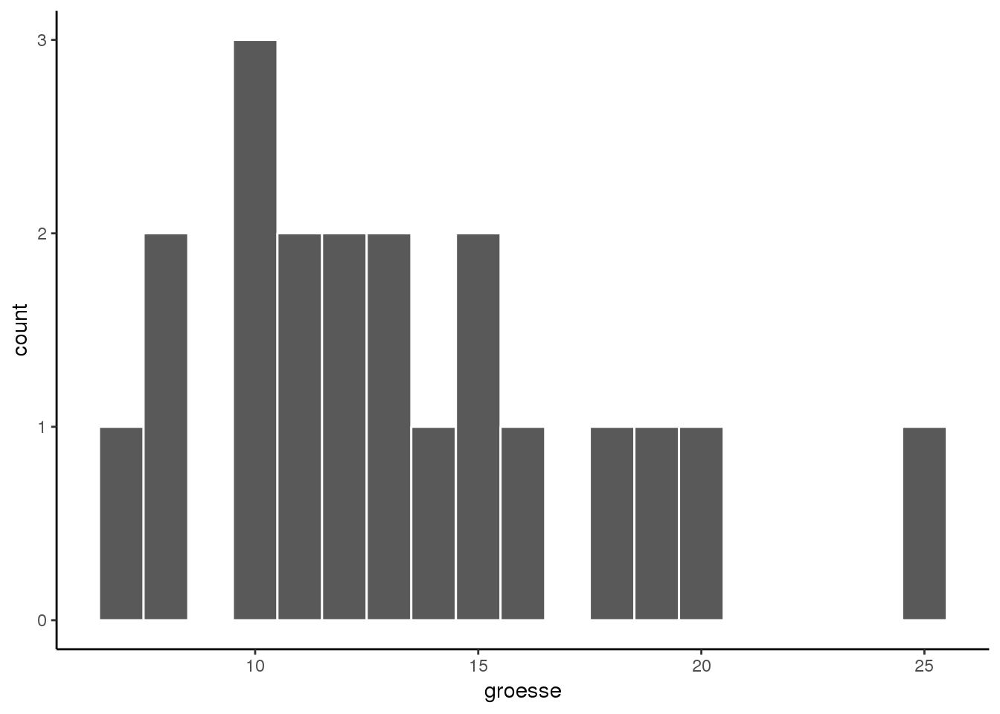
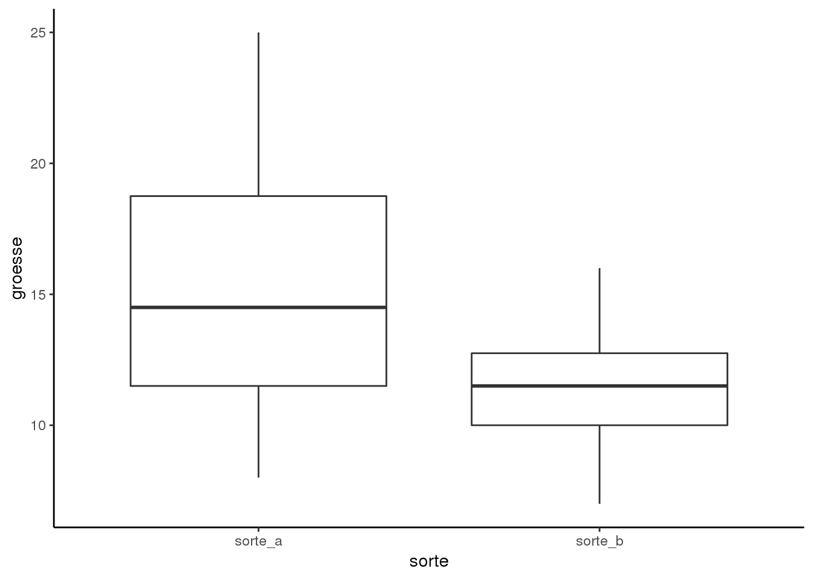
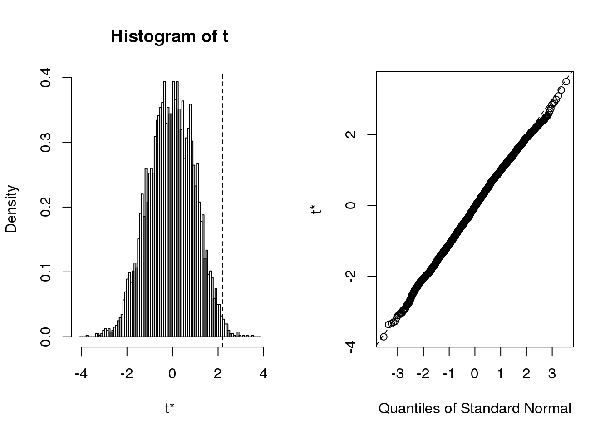
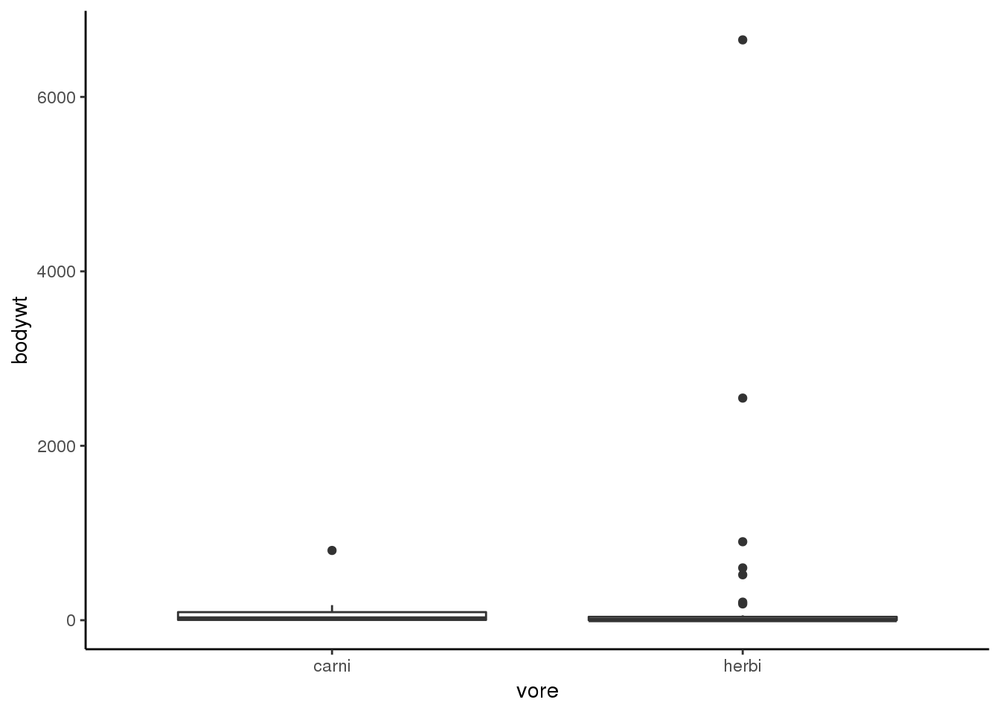
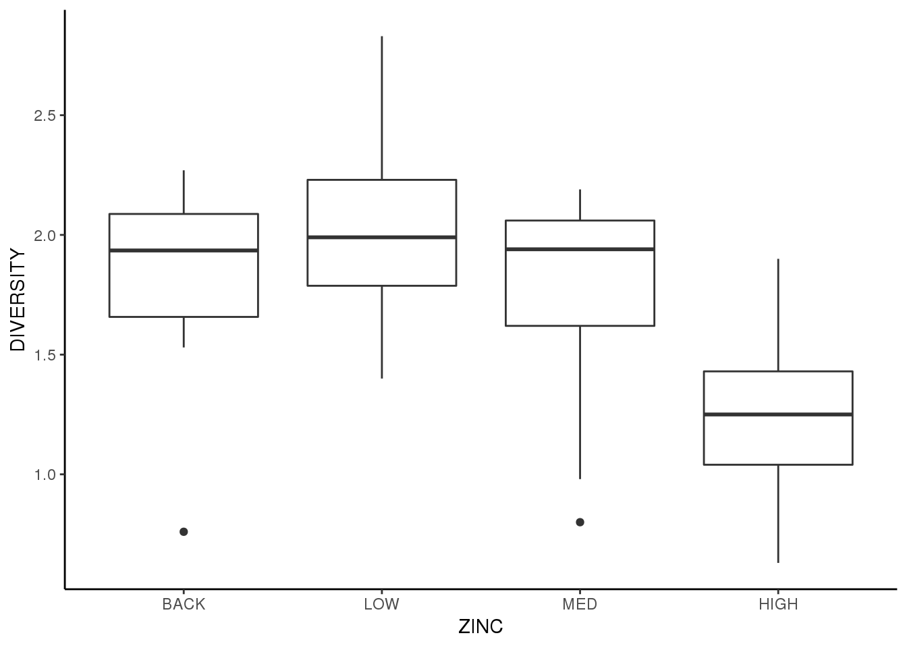

6.1 Demo: Stastische Tests
6.1.1 Assoziationstests
library(car)
library(tidyverse)
library(ggfortify)
select <- dplyr::select
# Chi-Quadrat-Test
# Ermitteln des kritischen Wertes für 95 perzentile und 1 FG
qchisq(0.95,1)
## [1] 3.841459
# Datensatz von Folie 28: Test auf Assoziation zwischen zwei kategorialen Variablen
# Frage: Wie hängen zwei Eigenschaften des gleichen Objektes zusammen?
count <- matrix(c(38,14,11,51),nrow=2)
count
## [,1] [,2]
## [1,] 38 11
## [2,] 14 51
dimnames(count) <- list(c("helle_haare","hunkle_haare"),c("blaue_augen","braune_augen"))
count
## blaue_augen braune_augen
## helle_haare 38 11
## hunkle_haare 14 51
chisq.test(count)
##
## Pearson's Chi-squared test with Yates' continuity correction
##
## data: count
## X-squared = 33.112, df = 1, p-value = 8.7e-09
chisq.test(count,correct = F)
##
## Pearson's Chi-squared test
##
## data: count
## X-squared = 35.334, df = 1, p-value = 2.778e-09
fisher.test(count)
##
## Fisher's Exact Test for Count Data
##
## data: count
## p-value = 2.099e-09
## alternative hypothesis: true odds ratio is not equal to 1
## 95 percent confidence interval:
## 4.746351 34.118920
## sample estimates:
## odds ratio
## 12.226976.1.2 t-Test
# Datensatz "Blumen" erstellen für t-Test
blume <-data.frame(
sorte_a = c(20,19,25,10,8,15,13,18,11,14),
sorte_b = c(12,15,16,7,8,10,12,11,13,10)
)
blume
## sorte_a sorte_b
## 1 20 12
## 2 19 15
## 3 25 16
## 4 10 7
## 5 8 8
## 6 15 10
## 7 13 12
## 8 18 11
## 9 11 13
## 10 14 10
summary(blume)
## sorte_a sorte_b
## Min. : 8.00 Min. : 7.00
## 1st Qu.:11.50 1st Qu.:10.00
## Median :14.50 Median :11.50
## Mean :15.30 Mean :11.40
## 3rd Qu.:18.75 3rd Qu.:12.75
## Max. :25.00 Max. :16.006.1.2.1 Tests mit einer breiten (wide) Tabelle
boxplot(blume$sorte_a,blume$sorte_b)
hist(blume$sorte_a)
hist(blume$sorte_b)
t.test(blume$sorte_a,blume$sorte_b) #zweiseitig
##
## Welch Two Sample t-test
##
## data: blume$sorte_a and blume$sorte_b
## t = 2.0797, df = 13.907, p-value = 0.05654
## alternative hypothesis: true difference in means is not equal to 0
## 95 percent confidence interval:
## -0.1245926 7.9245926
## sample estimates:
## mean of x mean of y
## 15.3 11.4
t.test(blume$sorte_a,blume$sorte_b, alternative="greater") #einseitig
##
## Welch Two Sample t-test
##
## data: blume$sorte_a and blume$sorte_b
## t = 2.0797, df = 13.907, p-value = 0.02827
## alternative hypothesis: true difference in means is greater than 0
## 95 percent confidence interval:
## 0.5954947 Inf
## sample estimates:
## mean of x mean of y
## 15.3 11.4
t.test(blume$sorte_a,blume$sorte_b, alternative="less") #einseitig
##
## Welch Two Sample t-test
##
## data: blume$sorte_a and blume$sorte_b
## t = 2.0797, df = 13.907, p-value = 0.9717
## alternative hypothesis: true difference in means is less than 0
## 95 percent confidence interval:
## -Inf 7.204505
## sample estimates:
## mean of x mean of y
## 15.3 11.4
t.test(blume$sorte_a,blume$sorte_b, var.equal=T) #Varianzen gleich, klassischer t-Test
##
## Two Sample t-test
##
## data: blume$sorte_a and blume$sorte_b
## t = 2.0797, df = 18, p-value = 0.05212
## alternative hypothesis: true difference in means is not equal to 0
## 95 percent confidence interval:
## -0.03981237 7.83981237
## sample estimates:
## mean of x mean of y
## 15.3 11.4
t.test(blume$sorte_a,blume$sorte_b, var.equal=F) #Varianzen ungleich, Welch's t-Test, ist auch default
##
## Welch Two Sample t-test
##
## data: blume$sorte_a and blume$sorte_b
## t = 2.0797, df = 13.907, p-value = 0.05654
## alternative hypothesis: true difference in means is not equal to 0
## 95 percent confidence interval:
## -0.1245926 7.9245926
## sample estimates:
## mean of x mean of y
## 15.3 11.4
t.test(blume$sorte_a,blume$sorte_b, paired=T) #gepaarter t-Test
##
## Paired t-test
##
## data: blume$sorte_a and blume$sorte_b
## t = 3.4821, df = 9, p-value = 0.006916
## alternative hypothesis: true difference in means is not equal to 0
## 95 percent confidence interval:
## 1.366339 6.433661
## sample estimates:
## mean of the differences
## 3.9
t.test(blume$sorte_a,blume$sorte_b, paired=T,alternative="greater") #gepaarter t-Test
##
## Paired t-test
##
## data: blume$sorte_a and blume$sorte_b
## t = 3.4821, df = 9, p-value = 0.003458
## alternative hypothesis: true difference in means is greater than 0
## 95 percent confidence interval:
## 1.846877 Inf
## sample estimates:
## mean of the differences
## 3.9
shapiro.test(blume$sorte_b)
##
## Shapiro-Wilk normality test
##
## data: blume$sorte_b
## W = 0.97341, p-value = 0.9206
wilcox.test(blume$sorte_a,blume$sorte_b)
##
## Wilcoxon rank sum test with continuity correction
##
## data: blume$sorte_a and blume$sorte_b
## W = 73, p-value = 0.08789
## alternative hypothesis: true location shift is not equal to 06.1.2.2 Tests mit einer langen (long) Tabelle
# T-Tests mit einer langen (long) Tabelle
# breit zu long mit tidyr::gather
blume_long <- gather(blume,sorte,groesse)
# Für eine Long table können wir auch gut ggplot verwenden
ggplot(blume_long, aes(sorte, groesse)) +
geom_boxplot()
ggplot(blume_long, aes(groesse)) +
geom_histogram(binwidth = 1, colour = "white")
ggplot(blume_long, aes(groesse)) +
geom_histogram(binwidth = 2, colour = "white")+
facet_grid(sorte~.)
ggplot(blume_long, aes(groesse, fill = sorte)) +
geom_density(alpha = 0.5)
t.test(groesse~sorte, blume_long)
##
## Welch Two Sample t-test
##
## data: groesse by sorte
## t = 2.0797, df = 13.907, p-value = 0.05654
## alternative hypothesis: true difference in means is not equal to 0
## 95 percent confidence interval:
## -0.1245926 7.9245926
## sample estimates:
## mean in group sorte_a mean in group sorte_b
## 15.3 11.4
# Optionen "alternative" und "var.equal" werden angepasst analog der "wide" table6.1.3 Randomisierung
Datensatz: beetle.csv
# Randomisierung
beetles <- read_delim("13_Statistik1/data/beetle.csv", ",")
ggplot(beetles, aes(SIZE, BEETLES)) +
geom_boxplot()
ggplot(beetles, aes(SIZE, sqrt(BEETLES))) +
geom_boxplot()
ggplot(beetles, aes(SIZE, BEETLES)) +
geom_boxplot() +
scale_y_sqrt()
# extract specific inidies from t-test
stat <- function(data, indices) {
t.test <- t.test(BEETLES~SIZE, data)$"stat"
t.test
}
# Random generator auf der Basis eines Datensatzes
rand.gen <- function(data,mle) {
out <- data
out$SIZE <- sample(out$SIZE, replace=F)
out
}
library(boot)
# boot(): bootstrap resampling
beetles.boot <- boot(data = beetles,
statistic = stat,
R=5000,
sim="parametric",
ran.gen=rand.gen)
print(beetles.boot)
##
## PARAMETRIC BOOTSTRAP
##
##
## Call:
## boot(data = beetles, statistic = stat, R = 5000, sim = "parametric",
## ran.gen = rand.gen)
##
##
## Bootstrap Statistics :
## original bias std. error
## t1* 2.190697 -2.244683 1.017726
plot(beetles.boot)
tval <- length(beetles.boot[beetles.boot$t >= abs(beetles.boot$t0)])+1
tval
## [1] 44
tval/(beetles.boot$R + 1)
## [1] 0.008798246.1.4 Voraussetzungen parametrischer Verfahren
6.1.4.1 F-Test
# F-Test
var.test(blume$sorte_a,blume$sorte_b)
##
## F test to compare two variances
##
## data: blume$sorte_a and blume$sorte_b
## F = 3.3715, num df = 9, denom df = 9, p-value = 0.08467
## alternative hypothesis: true ratio of variances is not equal to 1
## 95 percent confidence interval:
## 0.8374446 13.5738284
## sample estimates:
## ratio of variances
## 3.371547
var.test(groesse~sorte, blume_long)
##
## F test to compare two variances
##
## data: groesse by sorte
## F = 3.3715, num df = 9, denom df = 9, p-value = 0.08467
## alternative hypothesis: true ratio of variances is not equal to 1
## 95 percent confidence interval:
## 0.8374446 13.5738284
## sample estimates:
## ratio of variances
## 3.3715476.1.4.2 Levene Test
# Levene Test
library(car)
leveneTest(blume$sorte_a,blume$sorte_b,center=mean)
## Levene's Test for Homogeneity of Variance (center = mean)
## Df F value Pr(>F)
## group 7 3.0148e+30 < 2.2e-16 ***
## 2
## ---
## Signif. codes: 0 '***' 0.001 '**' 0.01 '*' 0.05 '.' 0.1 ' ' 1
leveneTest(groesse~sorte, blume_long)
## Levene's Test for Homogeneity of Variance (center = median)
## Df F value Pr(>F)
## group 1 3.0507 0.09774 .
## 18
## ---
## Signif. codes: 0 '***' 0.001 '**' 0.01 '*' 0.05 '.' 0.1 ' ' 16.1.4.3 Visuelle Inspektion / Transformation
# Visuelle Inspektion
sleep <- msleep %>%
filter(vore %in% c("carni","herbi")) %>%
dplyr::select(name,vore,bodywt)
ggplot(sleep, aes(vore, bodywt, group = vore)) +
geom_boxplot()
sleep <- sleep %>%
mutate(
bodywt_log10 = log10(bodywt),
bodywt_sqrt = sqrt(bodywt),
bodywt_4throot = bodywt^0.25
) %>%
gather(key,val, -c(name,vore))
sleep
## # A tibble: 204 x 4
## name vore key val
## <chr> <chr> <chr> <dbl>
## 1 Cheetah carni bodywt 50
## 2 Mountain beaver herbi bodywt 1.35
## 3 Cow herbi bodywt 600
## 4 Three-toed sloth herbi bodywt 3.85
## 5 Northern fur seal carni bodywt 20.5
## 6 Dog carni bodywt 14
## 7 Roe deer herbi bodywt 14.8
## 8 Goat herbi bodywt 33.5
## 9 Guinea pig herbi bodywt 0.728
## 10 Chinchilla herbi bodywt 0.42
## # ... with 194 more rows
ggplot(sleep, aes(vore, val, group = vore)) +
geom_boxplot() +
facet_wrap(~key, scales = "free_y")
6.1.5 Einstieg ANOVA
6.1.5.1 ANOVA mit “Blumen”-Daten
# ANOVA mit "Blumen"-Daten
ggplot(blume_long, aes(sorte, groesse)) +
geom_boxplot()
t.test(groesse~sorte, blume_long, var.equal=T)
##
## Two Sample t-test
##
## data: groesse by sorte
## t = 2.0797, df = 18, p-value = 0.05212
## alternative hypothesis: true difference in means is not equal to 0
## 95 percent confidence interval:
## -0.03981237 7.83981237
## sample estimates:
## mean in group sorte_a mean in group sorte_b
## 15.3 11.4
#now as ANOVA
aov(groesse~sorte,blume_long)
## Call:
## aov(formula = groesse ~ sorte, data = blume_long)
##
## Terms:
## sorte Residuals
## Sum of Squares 76.05 316.50
## Deg. of Freedom 1 18
##
## Residual standard error: 4.193249
## Estimated effects may be unbalanced
summary(aov(groesse~sorte,blume_long)) #F-value = 4.325
## Df Sum Sq Mean Sq F value Pr(>F)
## sorte 1 76.0 76.05 4.325 0.0521 .
## Residuals 18 316.5 17.58
## ---
## Signif. codes: 0 '***' 0.001 '**' 0.01 '*' 0.05 '.' 0.1 ' ' 1
summary.lm(aov(groesse~sorte,blume_long))
##
## Call:
## aov(formula = groesse ~ sorte, data = blume_long)
##
## Residuals:
## Min 1Q Median 3Q Max
## -7.300 -2.575 -0.350 2.925 9.700
##
## Coefficients:
## Estimate Std. Error t value Pr(>|t|)
## (Intercept) 15.300 1.326 11.54 9.47e-10 ***
## sortesorte_b -3.900 1.875 -2.08 0.0521 .
## ---
## Signif. codes: 0 '***' 0.001 '**' 0.01 '*' 0.05 '.' 0.1 ' ' 1
##
## Residual standard error: 4.193 on 18 degrees of freedom
## Multiple R-squared: 0.1937, Adjusted R-squared: 0.1489
## F-statistic: 4.325 on 1 and 18 DF, p-value: 0.05212
lm(groesse~sorte,blume_long)
##
## Call:
## lm(formula = groesse ~ sorte, data = blume_long)
##
## Coefficients:
## (Intercept) sortesorte_b
## 15.3 -3.9
summary(lm(groesse~sorte,blume_long))
##
## Call:
## lm(formula = groesse ~ sorte, data = blume_long)
##
## Residuals:
## Min 1Q Median 3Q Max
## -7.300 -2.575 -0.350 2.925 9.700
##
## Coefficients:
## Estimate Std. Error t value Pr(>|t|)
## (Intercept) 15.300 1.326 11.54 9.47e-10 ***
## sortesorte_b -3.900 1.875 -2.08 0.0521 .
## ---
## Signif. codes: 0 '***' 0.001 '**' 0.01 '*' 0.05 '.' 0.1 ' ' 1
##
## Residual standard error: 4.193 on 18 degrees of freedom
## Multiple R-squared: 0.1937, Adjusted R-squared: 0.1489
## F-statistic: 4.325 on 1 and 18 DF, p-value: 0.05212
# Compare the above results of t.test, aov and lm and how the relevant data are displayed
# Now check with the F-distribution:
# What would have been the critical value for a significant result at p < 0.05?
qf(0.95,1,18)
## [1] 4.413873
# which is the p-value associated with the obtained F-value?
1-pf(4.325,1,18) #probability of obtaining F=4,325 or greater
## [1] 0.05212253## Optional für Demo
#overall mean and residuals
blume_long$index <- 1:20
blume_long <- blume_long %>%
group_by(sorte) %>%
mutate(
mean = mean(groesse)
)
ggplot(blume_long, aes(index,groesse)) +
geom_point() +
geom_hline(aes(yintercept = mean(groesse))) +
geom_segment(aes(x = index,y = groesse,xend = index,yend = mean(groesse))) +
labs(x = "Order",y = expression(Size~(cm^2)))
#group means and residuals
ggplot(blume_long, aes(index,groesse, colour = sorte)) +
geom_point() +
geom_hline(aes(yintercept = mean)) +
geom_segment(aes(x = index,y = groesse,xend = index,yend = mean)) +
labs(x = "Order",y = expression(Size~(cm^2))) +
facet_grid(~sorte)
library(ggfortify)
autoplot(aov(groesse~sorte, blume_long))
6.1.5.2 ANOVA mit Gewässerdaten
Aus Logan (2010 S. 265): Script an Tools/Packages des Moduls Research Methods angepasst
Medley and Clements (1998) investigated the impact of zinc contamination (and other heavy metals) on the diversity of diatom species in the USA Rocky Mountains (from Box 8.1 of Quinn and Keough (2002)). The diversity of diatoms (number of species) and degree of zinc contamination (categorized as either of high, medium, low or natural background level) were recorded from between four and six sampling stations within each of six streams known to be polluted. These data were used to test the null hypothesis that there were no differences the diversity of diatoms between different zinc levels (\[H_0 = \mu_M = \mu_L = \mu_V = \mu; \alpha_i = 0\])
The linear effects model would be:
\[\gamma_{ij} = \mu + \alpha_i + \epsilon_{ij}\] \[\text{diatom species diversity} = \text{overal mean} + \text{effect of zinc level} + \text{error}\]
6.1.5.2.1 Step 1
Import the Medley and Clements (1998) data set medley.csv
# impact of zinc contamination (and other heavy metals) on the diversity of diatom species in the USA Rocky Mountains
medley <- read_delim("13_Statistik1/data/medley.csv", ",")6.1.5.2.2 Step 2
Reorganize the levels of the categorical factor into a more logical order
# Reorganize the levels of the categorical factor into a more logical order
medley$ZINC <- factor(medley$ZINC, levels=c("BACK", "LOW", "MED","HIGH"), ordered=T)6.1.5.2.3 Step 3
Assess normality/homogeneity of variance using boxplot of species diversity against zinc group
# Assess normality/homogeneity of variance using boxplot of species diversity against zinc group
ggplot(medley, aes(ZINC, DIVERSITY)) +
geom_boxplot()
6.1.5.2.4 Step 4
Assess homogeneity of variance assumption with a table and/or plot of mean vs variance
# Assess homogeneity of variance assumption with a table and/or plot of mean vs variance
medley_sry <- medley %>%
group_by(ZINC) %>%
summarise(
mean = mean(DIVERSITY),
var = var(DIVERSITY),
sd = sd(DIVERSITY)
)
ggplot(medley_sry, aes(mean,var)) +
geom_point()
6.1.6 Libraries
Dieses Kapitel verwendet folgende Libraries: Canty and Ripley (2017), Horikoshi and Tang (2018), Wickham (2018a), Wickham (2018c), Wickham, François, et al. (2018), Henry and Wickham (2018), Wickham, Hester, and Francois (2017), Wickham and Henry (2018), Müller and Wickham (2018), Wickham, Chang, et al. (2018), Wickham (2017), Fox, Weisberg, and Price (2018a), Fox, Weisberg, and Price (2018b)
Statistik 8 (20.11.2018)
Logan, Murray. 2010. Biostatistical Design and Analysis Using R : A Practical Guide. Wiley-Blackwell. http://onlinelibrary.wiley.com/book/10.1002/9781444319620.
Canty, Angelo, and Brian Ripley. 2017. Boot: Bootstrap Functions (Originally by Angelo Canty for S). https://CRAN.R-project.org/package=boot.
Horikoshi, Masaaki, and Yuan Tang. 2018. Ggfortify: Data Visualization Tools for Statistical Analysis Results. https://CRAN.R-project.org/package=ggfortify.
Wickham, Hadley. 2018a. Forcats: Tools for Working with Categorical Variables (Factors). https://CRAN.R-project.org/package=forcats.
Wickham, Hadley. 2018c. Stringr: Simple, Consistent Wrappers for Common String Operations. https://CRAN.R-project.org/package=stringr.
Wickham, Hadley, Romain François, Lionel Henry, and Kirill Müller. 2018. Dplyr: A Grammar of Data Manipulation. https://CRAN.R-project.org/package=dplyr.
Henry, Lionel, and Hadley Wickham. 2018. Purrr: Functional Programming Tools. https://CRAN.R-project.org/package=purrr.
Wickham, Hadley, Jim Hester, and Romain Francois. 2017. Readr: Read Rectangular Text Data. https://CRAN.R-project.org/package=readr.
Wickham, Hadley, and Lionel Henry. 2018. Tidyr: Easily Tidy Data with ’Spread()’ and ’Gather()’ Functions. https://CRAN.R-project.org/package=tidyr.
Müller, Kirill, and Hadley Wickham. 2018. Tibble: Simple Data Frames. https://CRAN.R-project.org/package=tibble.
Wickham, Hadley, Winston Chang, Lionel Henry, Thomas Lin Pedersen, Kohske Takahashi, Claus Wilke, and Kara Woo. 2018. Ggplot2: Create Elegant Data Visualisations Using the Grammar of Graphics. https://CRAN.R-project.org/package=ggplot2.
Wickham, Hadley. 2017. Tidyverse: Easily Install and Load the ’Tidyverse’. https://CRAN.R-project.org/package=tidyverse.
Fox, John, Sanford Weisberg, and Brad Price. 2018a. Car: Companion to Applied Regression. https://CRAN.R-project.org/package=car.
Fox, John, Sanford Weisberg, and Brad Price. 2018b. CarData: Companion to Applied Regression Data Sets. https://CRAN.R-project.org/package=carData.